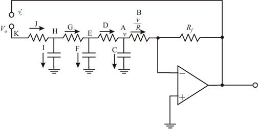

Apply Kirchhoff’s current law at node H.

Apply Kirchhoff’s voltage law in loop K-J-I.
Refer to Figure P17.18 in the text book.
Break the loop at node X of the circuit as shown in Figure P17.18 in the text book.
Draw the modified circuit.

Figure 1
The current passing through the branch C is,
Apply Kirchhoff’s current law at node A.
Apply Kirchhoff’s voltage law in loop F-D-C.
Apply Kirchhoff’s current law at node E.
Apply Kirchhoff’s voltage law in loop I-G-F.
Apply Kirchhoff’s current law at node H.
Apply Kirchhoff’s voltage law in loop K-J-I.
Determine the expression for the loop gain .
.
 .
.
The loop gain is purely real for sustained oscillations.
Thus, the frequency of oscillation is .
Write the expression of the frequency of oscillation of the sinusoid in Hz.
Substitute 10 kHz for and  for
for .
.
Thus, the value of  is.
is.
The magnitude of the transfer function is,
The magnitude is greater than unity.

Therefore, the feedback resistance to obtain oscillations at 10 kHz is.